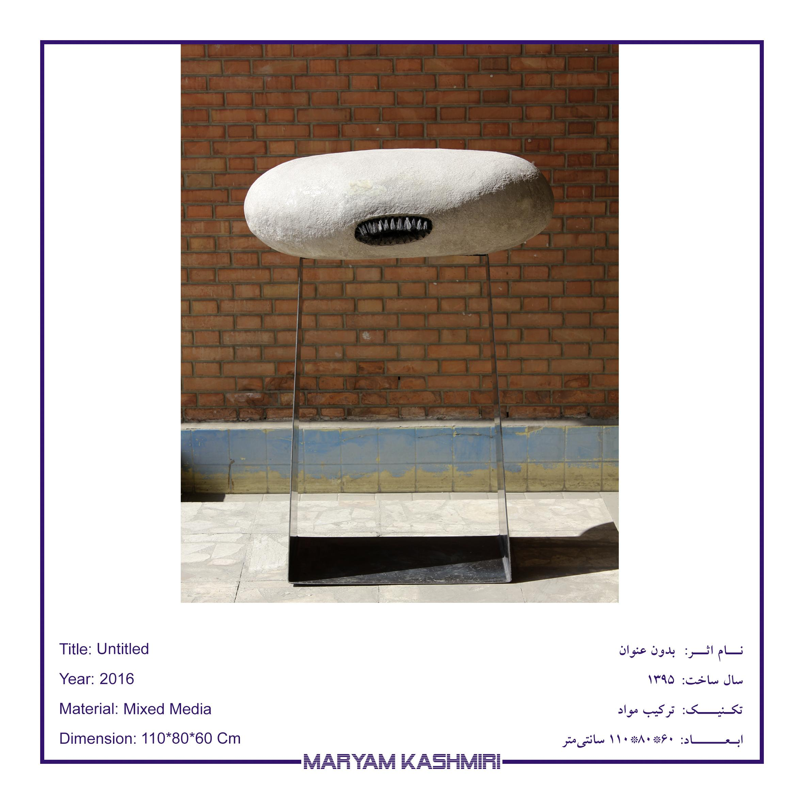
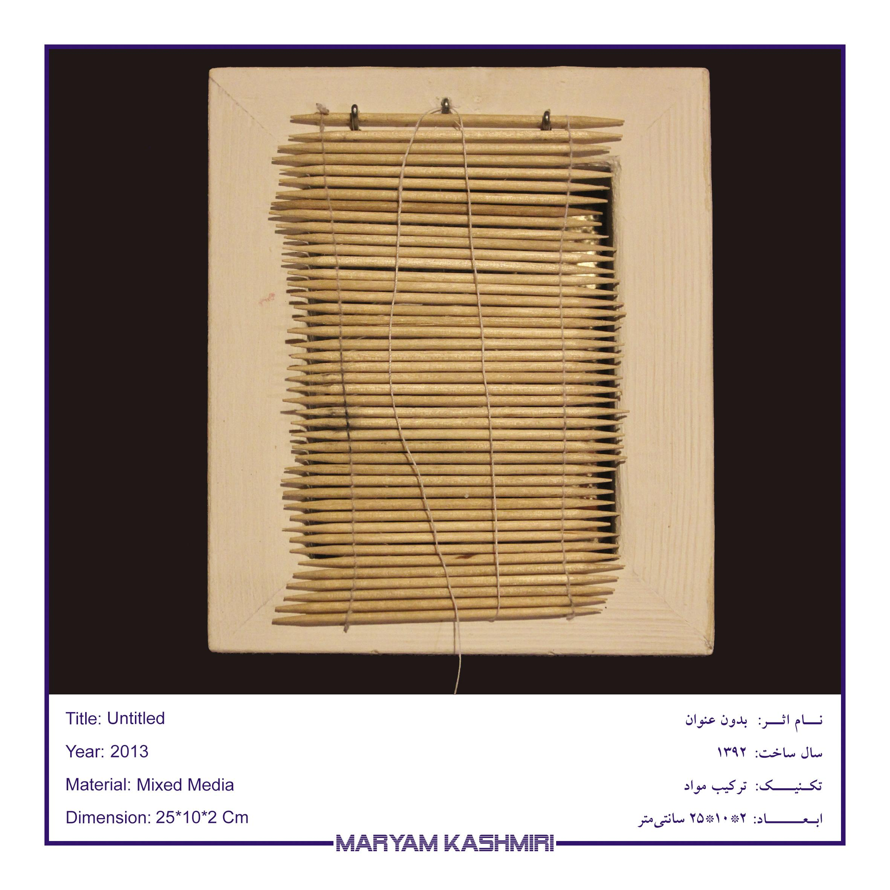
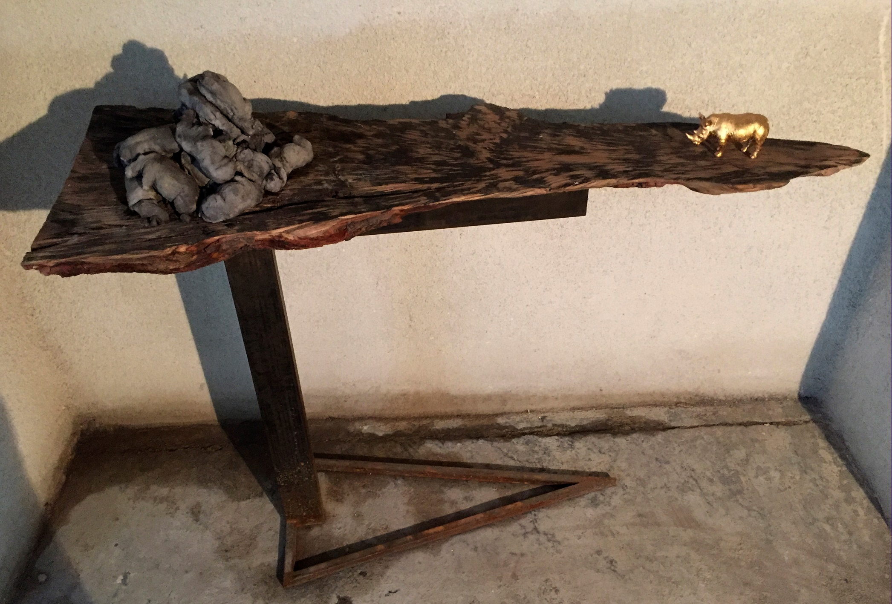
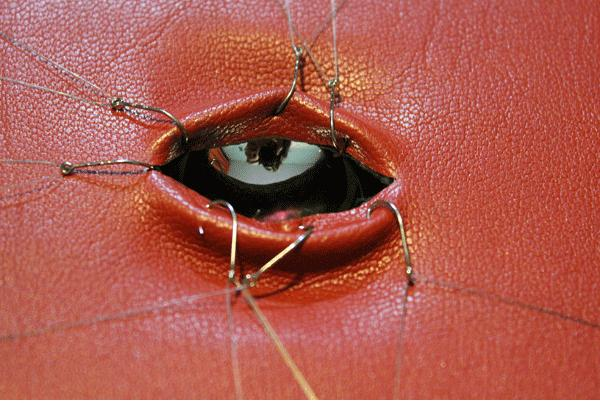

White Winged Horse (Short Film, 2020)

Festival Selection: 18th Tirana International Film Festival 2020
This short film was selected for the Panorama_New World section, offering an artistic exploration of perspectives through its narrative.
Facing (2016)

Material: Mixed Media | Dimensions: 110 x 80 x 60 cm
This piece symbolizes facing the unknown, emphasizing the fear that comes with first-time experiences. The artwork conveys the simplicity of the form contrasted with the depth of the unique experience.
Eating and Being Eaten (2014)
Material: Paper Mache | Dimensions: 60 x 160 x 140 cm
Inspired by the plant "Jo ghasem" found in Iran, this sculpture explores the cycle of consumption and existence, using the changing shape of the plant to symbolize our shifting roles between active and passive.
Family (2014)
Material: Mixed Media | Dimensions: 100 x 100 x 70 cm
This sculpture represents the dynamics of a family, highlighting the interconnected roles of parents and children. It conveys how individuals contribute by sharing both challenges and joys, which ultimately strengthens the coherence of the family structure.
Context (2014)
Material: Paper Mache | Dimensions: 160 x 50 x 40 cm
This piece uses recycled paper to represent homeless individuals as integral yet invisible parts of the city. It conveys how people adapt to and become one with their surroundings, often blending into the fabric of urban life.
Privacy (2013)

Material: Mixed Media | Dimensions: 25 x 10 x 2 cm
This piece captures the concept of privacy through the imagery of a window covered by a curtain. Though the curtain symbolizes protection, it also conveys the fragility of privacy and the possibility of it being disrupted.
Situation (2013)

Material: Mixed Media | Dimensions: 90 x 80 x 40 cm
Reflecting on social passivity, "Situation" illustrates how different people witness the same events with varying responses, yet remain impacted by the collective context.
Eye (2013)

Material: Mixed Media | Dimensions: 25 x 10 x 2 cm
This sculpture is related to the first experiences of growing up and being examined by a gynecologist. It represents the emotions of shame, fear, and pain simultaneously. The oval shape symbolizes courage and facing new experiences.